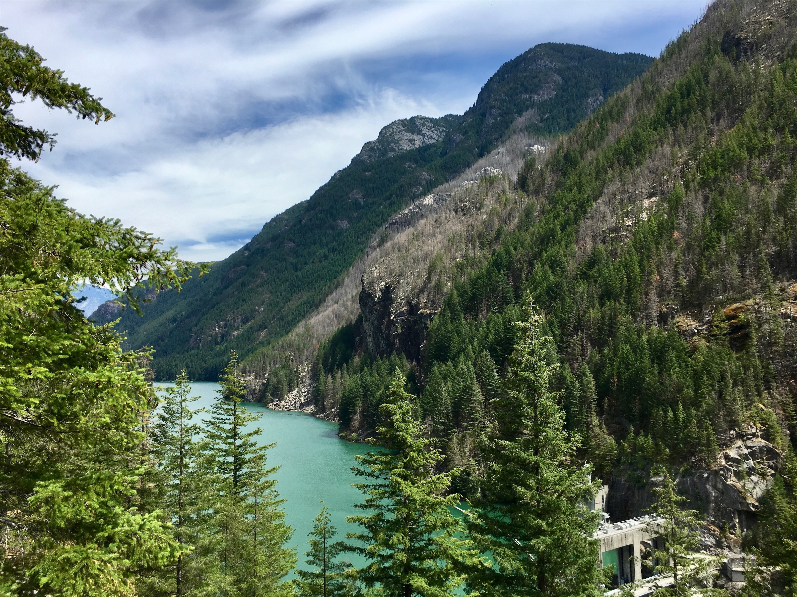
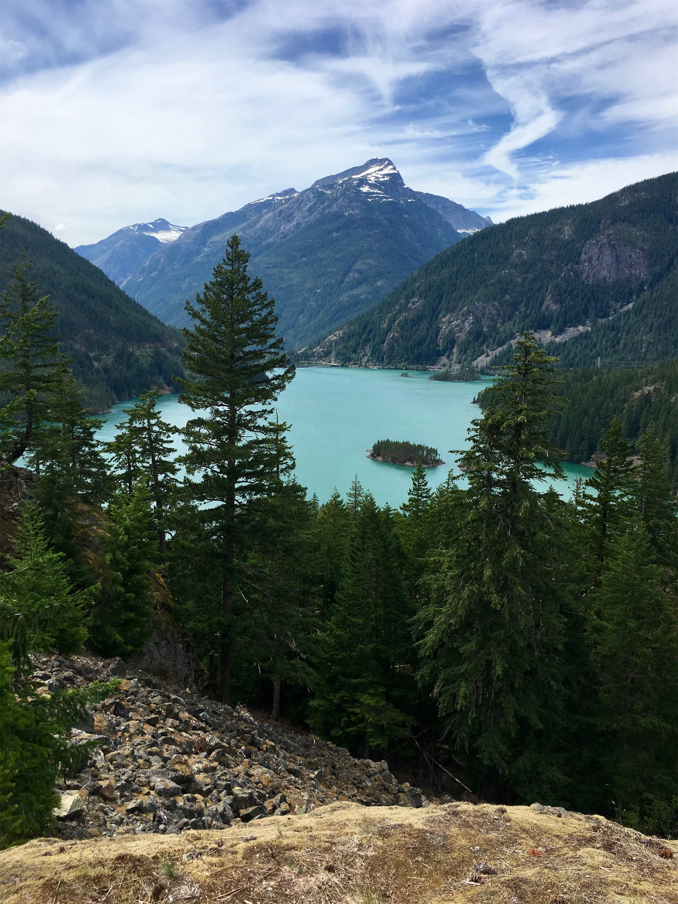
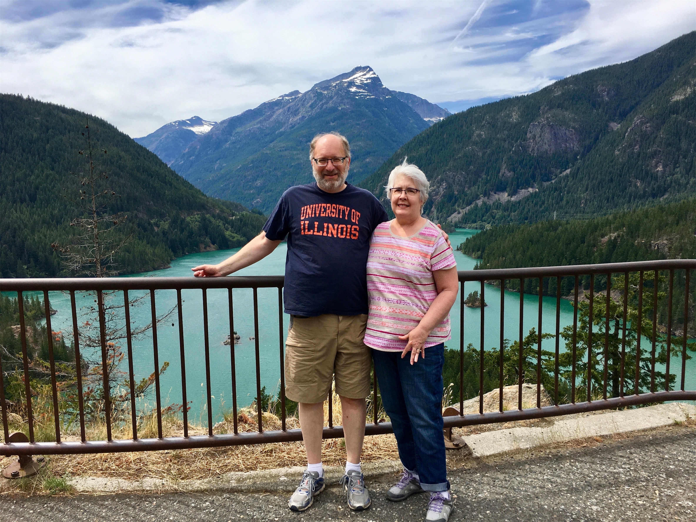
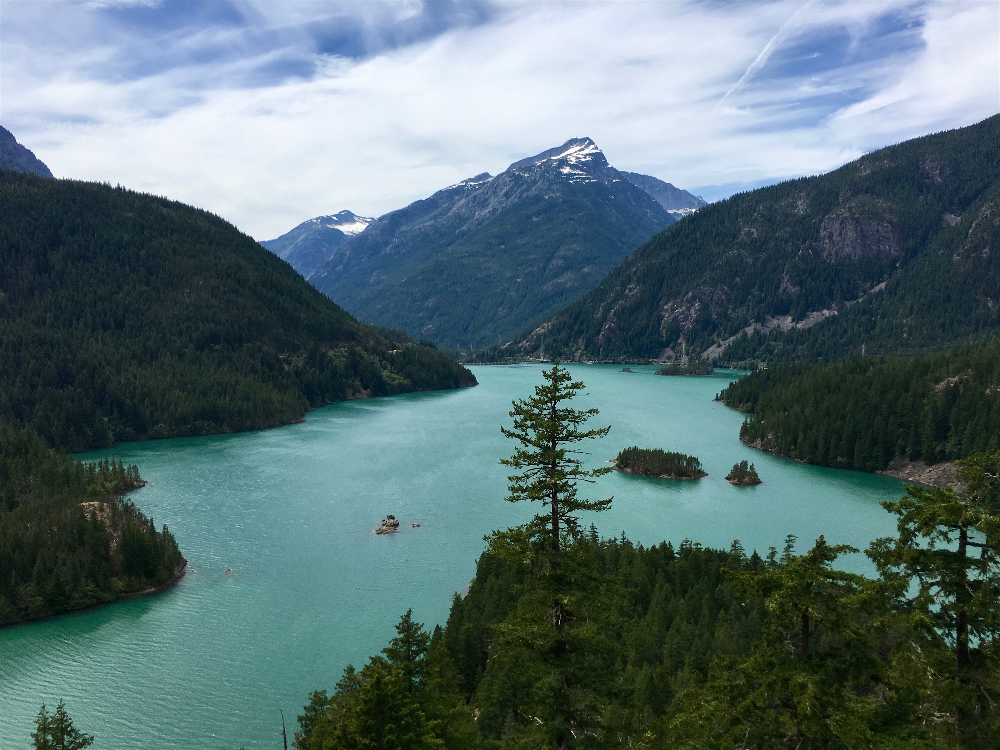
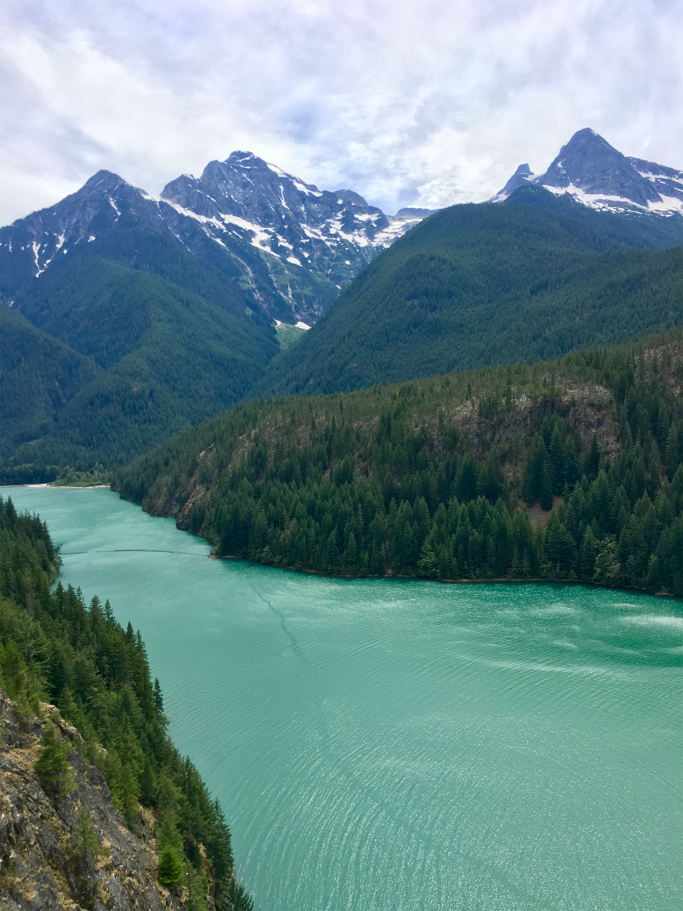

Monday, Jul 9, 2018, 12:03 PM PDT
North Cascades Visitor Center, Deming, WA, United States
70°F Sunny
70°F Sunny
![]()
7/8 Hurricane Ridge Visitor Center, WA -> Bellingham, WA 147 mi, 6.75 hr
7/9 Bellingham, WA -> North Cascades Visitor Center, WA 85 mi, 2 hr
Trip Total: 6,833 mi
We left Olympic via the 30-minute ferry ride from Port Townsend to Whidby Island, and then island hopped on Highway 20 until we rejoined I-5, and then headed north to our overnight stay in Bellingham, on the coast and about 20 miles from the Canadian border. We drove around the university and downtown areas, and made our way to the cute annexed town of Fairhaven. Along the journey, as far back as Whidby Island, the snow-covered Mt. Baker popped in and out of view.
The next morning we drove down the coast on the Chuckanut scenic drive, rejoining Highway 20 and headed straight east to the Cascades. We had pretty low expectations for this park, because our plan was to drive the highway right through, but we were treated with spectacular views of the countless mountains in the range, most with dramatic rock formations and many with some snow cover. We went on the 1.6 mile River Loop hike from the visitors center, taking us to the Skagit River shore through a dense forest of trees and ferns. The jade color of the rivers in the park is caused by glacial debris. We then stopped at Gorge Dam scenic overlook, and then the exquisite Diablo Lake overlook.





